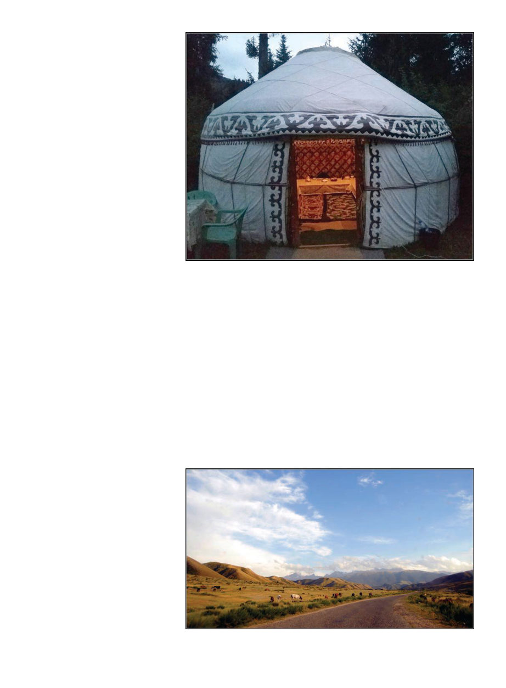

June 2019
703
The bees themselves were incred-
ibly docile, as if they had never re-
ceived the memo that stinging was a
thing they could do. The beekeeper
applied just the slightest whiff of
smoke, and no bee ever gave any-
one even an aggressive buzz. There
were light head veils available which
on this occasion one non-beekeeper
donned, but most of the other non-
beekeeper family members and vil-
lagers who my presence had attract-
ed were at ease and confident in the
bees’ non-aggression, crowding ca-
sually right around the open hives. I
never saw a full suit in all my travels
in Kyrgyzstan.
One piece of headgear I did see a
lot was the distinctive Kyrgyz felt
hat known as a “kalpak,” a white felt
domed hat that sits almost comically
high on the head, with a small up-
turned brim and usually some simple
but beautiful curly embroidery. It
was explained to me that the big air
pocket the hat creates keeps the head
warm in winter and cool in summer. I
was gifted one and though it felt silly
at first, I was soon un-self-conscious-
ly wearing it all around the country
(and then before leaving the country
picked up half a dozen because all my
friends clearly needed one. Last New
Year’s Eve found half a dozen Aus-
tralians in kalpaks ringing in the new
year in my tiny Australian hamlet).
With half the beehives in this vil-
lage dead, and not nearly as many
beekeepers to work with as I was
led to expect, I looked around this
remote wind-swept place, shivering,
and wondered how I could make it
worth the trouble. I had an interpret-
er, a young woman named Nurzat
on her first interpreter gig. She was
clearly anxious about whether she’d
do it well enough but in fact she real-
ly went above and beyond. Realizing
that we didn’t really have much to
do out here in Kenesh, she somehow
lined up a whole slew of beekeepers
for us to meet down the valley by the
larger town of Kurshab. I really don’t
know how she did this since she
wasn’t already plugged in to the bee-
keeping community, but I couldn’t
praise her enough in the final report.
We caught a ride with the brother of
the village headman, who was headed
in to Osh. Back down the valley (but
we had to proceed up-valley first,
because the downriver bridge had
been swept away years ago), down
to Kurshab, a slightly larger town
just where the river met the Fergana
Valley. In this town Nurzat’s in-laws
had a house, it was a nice house, but
most notably there was a yurt in the
yard (or a “yurta” as they seem to call
them). I have found the Kyrgyz to be
practically allergic to being indoors
(even with highs in the fifties they
would still take most meals at a table
outside, happy and oblivious to my
chattering teeth), and to have a pure
enduring love for their iconic yurtas.
The Kyrgyz flag is red with a golden
pastry-like stylized yurta in the center.
The yurta, the traditional dwelling of
their nomadic ancestors, they fondly
hang on to and I noticed many houses
in town had a yurta in the yard. Later,
as my perambulations took me fur-
ther into the hills, I would see that
many herdsmen still stayed in yurtas
while up in the high hills and moun-
tains and probably many beekeepers
too — the beekeepers I met with near-
ly all had a house in town surrounded
by their hives, but took them up into
the mountains for summer.
Because of a risk of theft, hives
would not be left unattended, but
accompanied by the beekeeper or at
least a family member 24/7. While
this may seem costly in time or mon-
ey, and the price they get for honey is
certainly less than we like, the cost of
living is itself so much lower that one
person can support themselves and
family with a hundred hives. How I
envy them! Give me a yurta, a hun-
dred hives, and a horse. Looks off wist-
fully into the distance.
This particularly beautiful yurta was actually a restaurant. Author had a delicious dish
of manti (perogis in hot yogurt) in it.
So many horses. Wild horses. Herds of horses. Horses everywhere.